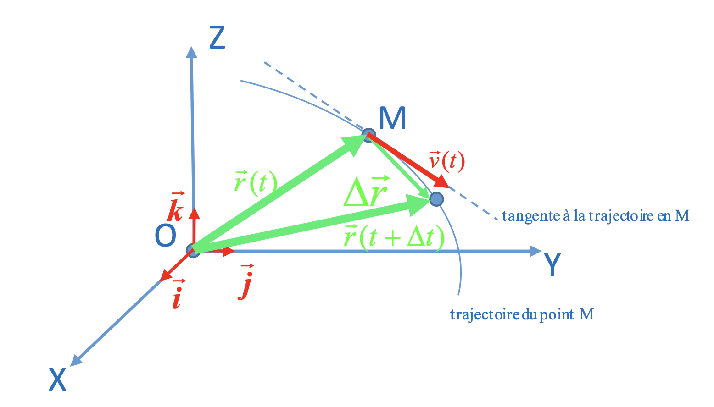
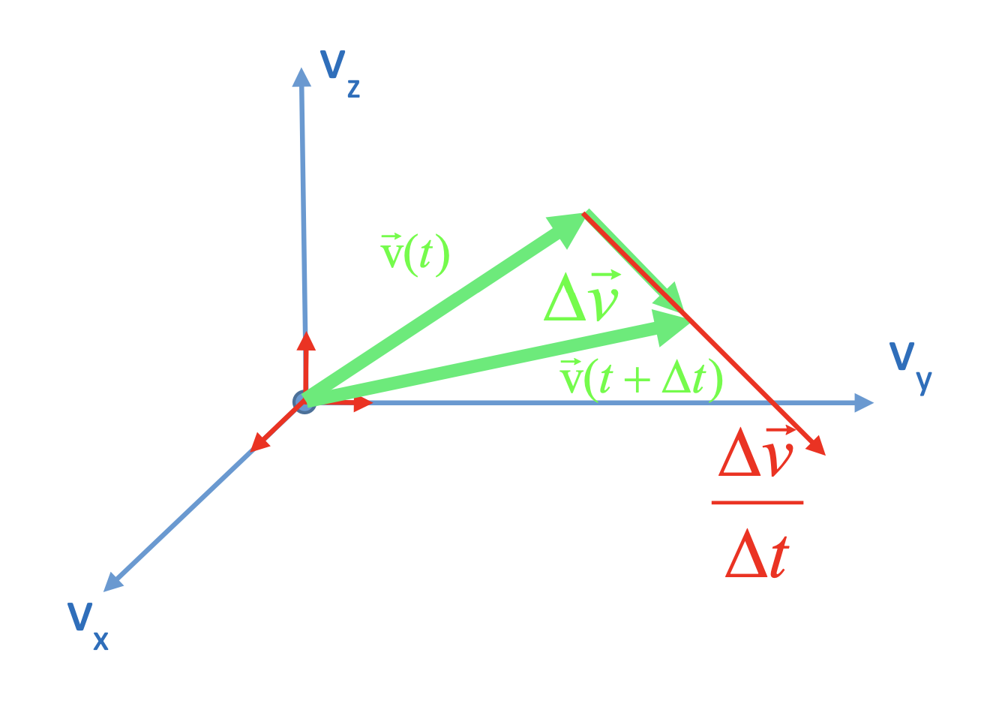
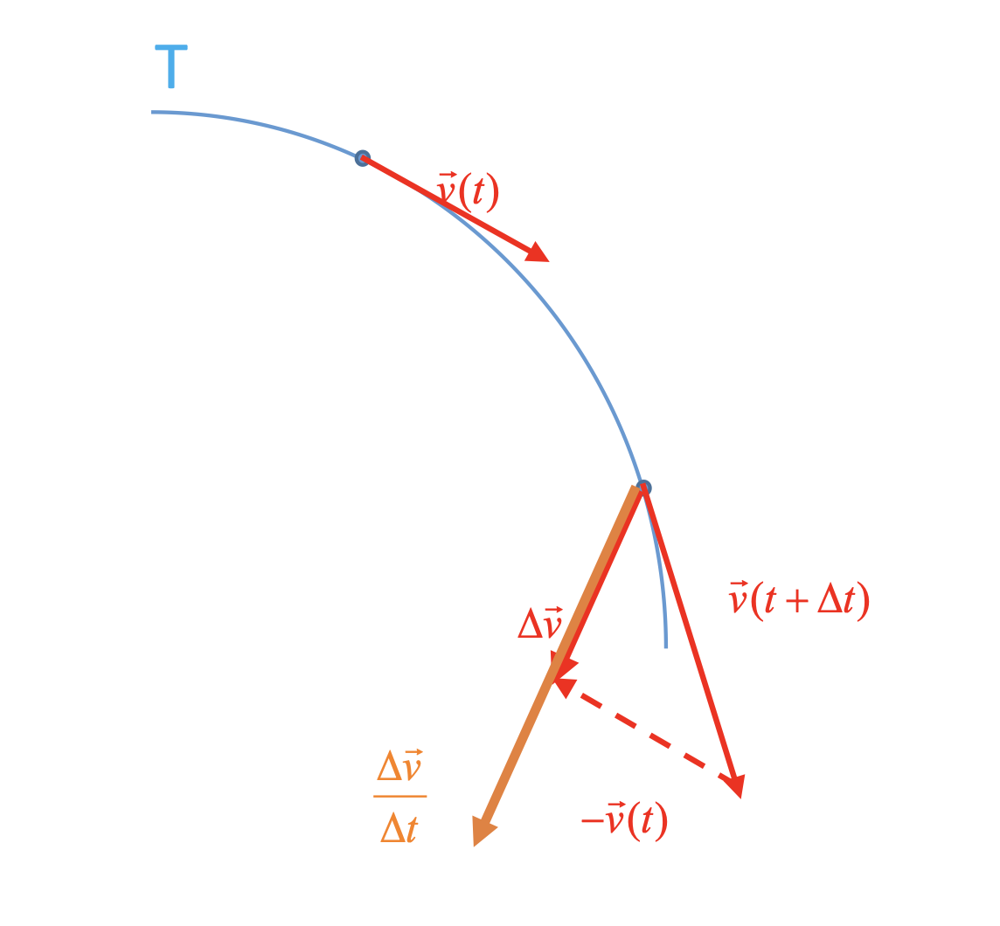
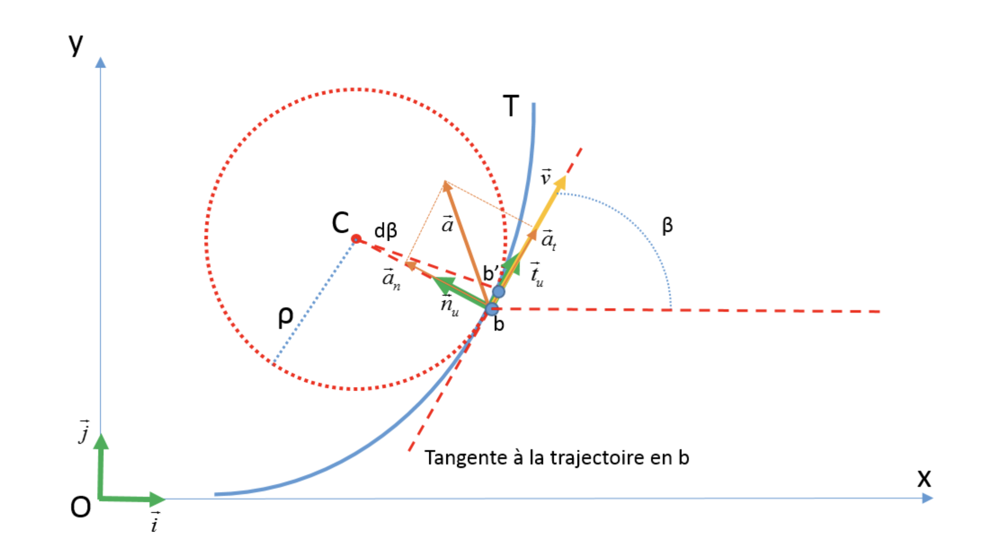

Cinématique
La cinématique consiste à décrire la manière dont un corps se déplace dans l'espace en fonction du temps.
Point dans l'espace
Définition
Soit $\left( O, \overrightarrow{i}, \overrightarrow{j}, \overrightarrow{k}, \right)$ un repère d'espace orthonormé fixé au référentiel $\Gamma$. Le point $M$ dans l'espace peut alors être repéré par le vecteur-position.
 $$ \overrightarrow{r} = x \overrightarrow{i} + y \overrightarrow{j} + z
\overrightarrow{k} = \begin{pmatrix} x \\ y \\ z \end{pmatrix} $$
$$ \overrightarrow{r} = x \overrightarrow{i} + y \overrightarrow{j} + z
\overrightarrow{k} = \begin{pmatrix} x \\ y \\ z \end{pmatrix} $$
Coordonnées cartésiennes
Définition
$x$, $y$, $z$ sont les coordonnées cartésiennes du point M.
Norme
Définition
La distance qui sépare $M$ de $O$ est donnée par
$$ d = \parallel \overrightarrow{r} \parallel = \sqrt{x^2 + y^2 + z^2} $$Degrés de liberté
Si l'on veut préciser la position du point $M(x,y,z)$ dans l'espace sans ambiguïté, on est donc obligé de préciser les trois coordonnées cartésiennes de $M$. On dira que le point $M$, libre de se déplacer dans l'espace, possède trois degrés de liberté. D'une manière générale, le nombre de degrés de liberté d'un point correspond au nombre de paramètres qu'on doit préciser pour repérer sa position dans l'espace.
Vecteur-vitesse
Si le point $M$ est en mouvement par rapport au référentiel $\Gamma$, son vecteur position dépend du temps $t$.
$$ \overrightarrow{r}(t) = \begin{pmatrix} x(t) \\ y(t) \\ z(t) \end{pmatrix} $$$\overrightarrow{r}(t)$ est la représentation paramétrique de la trajectoire décrite par le point $M$.
Vecteur-vitesse moyenne
Supposons que pendant l'intervalle de temps $\Delta t$ , le point mobile $M$ avance de la position repérée par le vecteur $\overrightarrow{r}(t)$ vers la position $\overrightarrow{r}(t + \Delta t) = \overrightarrow{r}(t) + \Delta \overrightarrow{r}$. Dans ce cas le mouvement effectué par $M$ peut être caractérisé par le vecteur-vitesse moyenne:
$$ \overrightarrow{v_m} = \frac{\overrightarrow{r}(t + \Delta t) - \overrightarrow{r}(t)}{\Delta t} $$Vecteur-vitesse instantanée
Si l'on veut connaître les caractéristiques du mouvement à la date précise $t$, on doit déterminer le vecteur-vitesse instantanée en $M$:
$$ \overrightarrow{v} =\overrightarrow{v} \left( x \right) =\lim_{\Delta t\rightarrow 0} \frac{\overrightarrow{r}(t + \Delta t) - \overrightarrow{r}(t)}{\Delta t} = \lim_{\Delta t\rightarrow 0} \frac{\Delta \overrightarrow{r}}{\Delta t} =\frac{d\overrightarrow{r}}{dt} =\dot{\overrightarrow{r}}$$
Le vecteur-vitesse correspond à la dérivée du vecteur-position
$\overrightarrow{r}$ du point $M$ par rapport au temps.
Plus
précisément :
Vecteur-accélération
Lorsqu'au cours du mouvement effectué par le point $M$ son vecteur-vitesse instantané change de direction, de sens ou de norme, nous dirons que le mouvement est accéléré.
Vecteur-accélération moyenne
Le vecteur-accélération moyenne est donné par:
$$ \overrightarrow{a_m} = \frac{\overrightarrow{v}(t + \Delta t) - \overrightarrow{v}(t)}{\Delta t} = \frac{\Delta \overrightarrow{v}}{\Delta t}$$Vecteur-accélération instantanée
$$ \overrightarrow{a} \left( x \right) =\lim_{\Delta t\rightarrow 0} \frac{\overrightarrow{v}(t + \Delta t) - \overrightarrow{v}(t)}{\Delta t} = \lim_{\Delta t\rightarrow 0} \frac{\Delta \overrightarrow{v}}{\Delta t} =\frac{d\overrightarrow{v}}{dt} =\dot{\overrightarrow{v}}$$Le vecteur-accélération à la date $t$ correspond à la dérivée du vecteur-vitesse $v$ par rapport au temps.
$$ \overrightarrow{a}(t) = \frac{d\overrightarrow{v}}{dt} = \begin{pmatrix} \frac{dv_x}{dt} \\ \frac{dv_y}{dt} \\ \frac{dv_z}{dt} \end{pmatrix} = \begin{pmatrix} \dot{v}_x \\ \dot{v}_y \\ \dot{v}_z \end{pmatrix}$$De plus:
$$ \overrightarrow{a}(t) = \frac{d \overrightarrow{v}}{dt} = \frac{d}{dt} \left( \frac{d \overrightarrow{r}}{dt} \right) = \frac{d^2 \overrightarrow{r} }{dt^2} = \ddot{ \overrightarrow{r} }$$De plus l'accélération est la norme du vecteur-accélération:
$$ a = \sqrt{\left( \frac{dv_{x}}{dt} \right)^{2} + \left( \frac{dv_{y}}{dt} \right)^{2} + \left( \frac{dv_{z}}{dt} \right)^{2}} $$ $$ \left[ a \right] = \frac{m}{s^2} $$Mouvement curviligne et vecteur-accélération
Supposons que le point $M$ décrit la trajectoire curviligne $T$. Le mouvement de $M$ est accéléré. Intéressons- nous tout d'abord aux caractéristiques du vecteur-accélération moyenne entre les dates et $t$ et $t + \Delta t$ :
 $$ \overrightarrow{a_{m}} = \frac{\overrightarrow{v}(t + \Delta t) - \overrightarrow{v}(t)}{\Delta t} = \frac{\Delta \overrightarrow{v}}{\Delta t} $$Dans le cas d'un mouvement curviligne, le vecteur-accélération est toujours orienté vers la concavité de la trajectoire.
Si le point mobile passe par le point $b$ de la trajectoire curviligne $T$ à la date $t$. On admet que $T$ est située intégralement dans le plan formé par l'axe des $X$ et l'axe des $Y$. Le vecteur-vitesse instantanée $\overrightarrow{v}$ est porté par la tangente à la trajectoire en $b$ et le vecteur-accélération instantanée $\overrightarrow{a}$ est orienté vers la concavité de la trajectoire. Nous allons décomposer le vecteur $\overrightarrow{a}$ dans la base de Frenet formée par les vecteurs unitaires $\overrightarrow{t_u}$ et $\overrightarrow{n_u}$:
$$ \overrightarrow{a} = a_t \overrightarrow{t_u} + a_n \overrightarrow{n_u} = \overrightarrow{a_t} + \overrightarrow{a_n} $$On définit:
-
$\overrightarrow{t_u}$, est le vecteur directeur unitaire de la tangente à la trajectoire en $b$
-
$\overrightarrow{n_u}$ est le vecteur directeur unitaire de la normale à la trajectoire en $b$
-
$\overrightarrow{n_u}$ est orienté vers le centre de courbure $c$ de la trajectoire au voisinage du point $b$
-
$\overrightarrow{a_t} = a_t \overrightarrow{t_u}$: composante tangentielle du vecteur-accélération qui décrit la variation de la vitesse par seconde.
-
$\overrightarrow{a_n} = a_n \overrightarrow{n_u}$: composante normale du vecteur-accélération qui décrit la variation de la direction du vecteur-vitesse par seconde
L'accélération tangentielle et l'accélération normale
Démonstration
Exprimons le vecteur-vitesse $\overrightarrow{v}$ dans la base de Frenet:
$$ \overrightarrow{v} = v \overrightarrow{t_u} $$De plus, le vecteur-accélération peut s'écrire sous forme
$$ \overrightarrow{a} = \frac{d \overrightarrow{v}}{dt} = \frac{d}{dt} \left( v \overrightarrow{t_u} \right) = \frac{dv}{dt} \overrightarrow{t_u} + v \frac{d \overrightarrow{t_u} }{dt}$$La base de Frenet représente un outil approprié à l'étude du comportement local d'une trajectoire. Elle est fixée au point mobile qui décrit la trajectoire. Dans le cas où la trajectoire est courbe, les vecteurs unitaires $\overrightarrow{t_u}$ et $\overrightarrow{n_u}$ changent continuellement de direction si le point mobile avance le long de la trajectoire. $\overrightarrow{t_u}$ et $\overrightarrow{n_u}$ dépendent donc du temps. Leurs dérivées par rapport au temps ne s'annulent pas.
Cherchons: $\frac{d \overrightarrow{t_u} }{dt}$
Par rapport à la base $\left( \overrightarrow{i}, \overrightarrow{j} \right)$:
$$ \overrightarrow{t_u} = \cos \left( \beta \right) \overrightarrow{i} + \sin \left( \beta \right) \overrightarrow{j}$$ $$ \overrightarrow{n_u} = \cos \left( \beta + \frac{\pi}{2} \right) \overrightarrow{i} + \sin \left( \beta + \frac{\pi}{2} \right) \overrightarrow{j}$$ $$ = - \sin \left( \beta \right) \overrightarrow{i} + \cos \left( \beta \right) \overrightarrow{j} $$où $\beta$ désigne l'angle entre l'axe des $X$ et la tangente à la trajectoire en $b$. Comme les vecteurs unitaires et $\overrightarrow{i}$ et $\overrightarrow{j}$ sont indépendants du temps, et $\beta$ varie continuellement lorsque le point mobile avance le long de la trajectoire.
$$ \frac{d \overrightarrow{t_u}}{dt} = - \sin \left( \beta \right) \frac{d \beta}{dt} \overrightarrow{i} + \cos \left( \beta \right) \frac{d \beta}{dt} \overrightarrow{j} = \frac{d \beta}{dt} \overrightarrow{n} $$Ainsi le vecteur $\frac{d \overrightarrow{t_u}}{dt}$ est normal à la tangente à la trajectoire en $b$.
Admettons que pendant le laps de temps $dt$ le point mobile avance de $b$ vers $b^{\prime}$. L'arc de cercle infinitésimal s'exprime par:
$$ \overparen{bb^{\prime}} = \rho \cdot d \beta $$Il suit:
$$ \frac{d \beta}{dt} = \frac{1}{\rho} \cdot \frac{\overparen{bb^{\prime}}}{dt} = \frac{v}{\rho} $$et
$$ \frac{d \overrightarrow{t_u}}{dt} = \frac{v}{\rho} \overrightarrow{n_u} $$Finalement:
$$ \overrightarrow{a} = \frac{dv}{dt} \overrightarrow{t_u} + \frac{v^2}{\rho} \overrightarrow{n_u} $$En comparant à l'équation $\overrightarrow{a} = a_t \overrightarrow{t_u} + a_n \overrightarrow{n_u}$ nous trouvons: